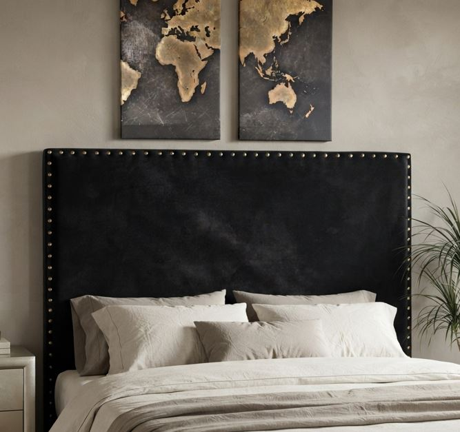

Línea SUPRACLASS
Nuestra línea más imponente de 1,50 metros. Tapizado premium.
Ver más detallesCalidad artesanal desde Don Torcuato hacia todo el país.

Nuestra línea más imponente de 1,50 metros. Tapizado premium.
Ver más detalles
Diseño geométrico y moderno para dormitorios contemporáneos.
Ver más detalles
El detalle artesanal que define el estilo de tu habitación.
Ver más detalles